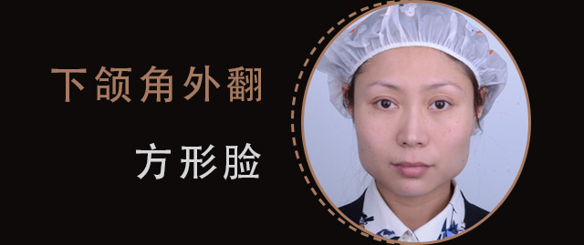
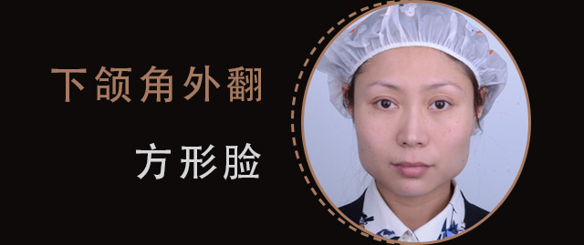
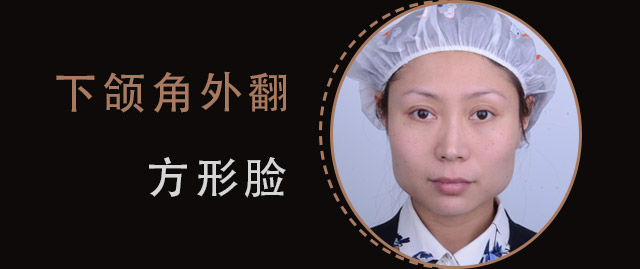

- 姓名：梦梦
- 年龄：31岁
- 手术专家：王东
- 蝶变项目：不开刀缩下颌角、艺脂颜面私定
“从小我的梦想就是能轻松拥有一张圆圆的小脸，但是想要解决我过分突出的下颌角，只有痛苦危险的磨骨手术才能做到吗？”
专家方案：
常规改脸型的磨骨手术，手术过程风险较大且恢复期极长，并且具有一定的痛苦，针对她的诉求，艺美独家手术项目不开刀缩下颌角这种微创的术式更适合她，无痛苦且恢复快，简单轻松就能够达到流畅面部曲线

“从小我的梦想就是能轻松拥有一张圆圆的小脸，但是想要解决我过分突出的下颌角，只有痛苦危险的磨骨手术才能做到吗？”
常规改脸型的磨骨手术，手术过程风险较大且恢复期极长，并且具有一定的痛苦，针对她的诉求，艺美独家手术项目不开刀缩下颌角这种微创的术式更适合她，无痛苦且恢复快，简单轻松就能够达到流畅面部曲线

据临床数据统计，87.5%以上的下颌角宽大，都不是骨性因素造成的。下颌角宽大主要是骨头上的粗隆把我们的肌肉、脂肪、皮肤，支撑起来造成一个肉感嵌在脸上，不开刀缩下颌角利用脂肪加减法精雕解决肌肉、脂肪、皮肤的问题
改善下颌角外侧缘的暴露点
脂肪移植重塑下颌缘线条
个性定制完美面部比例
不开刀缩下颌角采用脂肪加减法的移植技术，科学隐藏下颌角的暴露点，并重塑下颌缘，取材于自身无风险
不开刀缩下颌角不仅对宽大的脸型进行调整，而且还对下颌缘轮廓线进行重点修饰，鹅蛋脸型立现
不开刀缩下颌角手术仅通过耳后2-3mm微孔实现改脸型效果。术后仅需24小时美容加压，无需戴下颌套